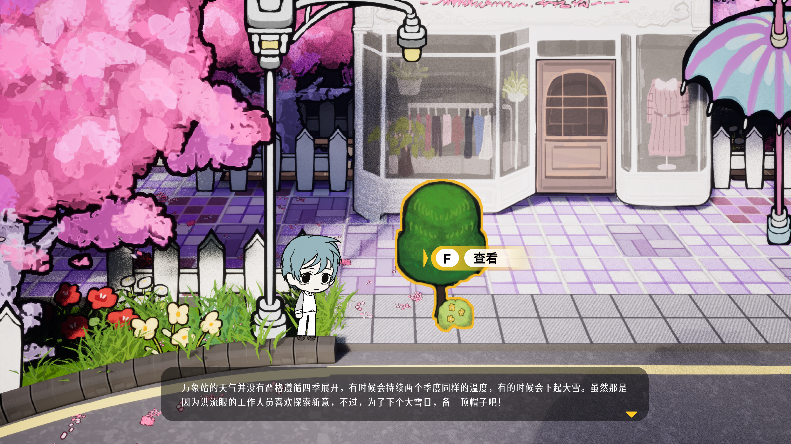
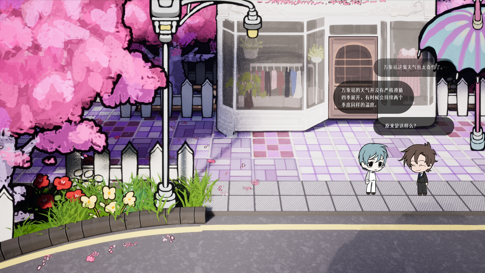
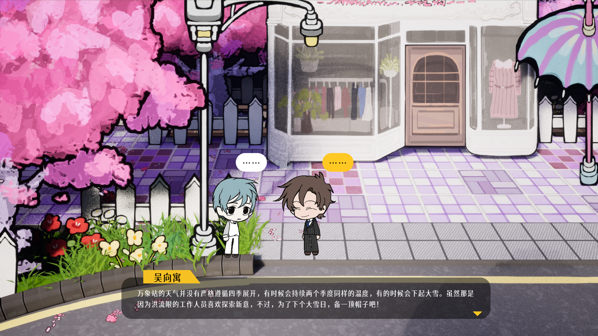
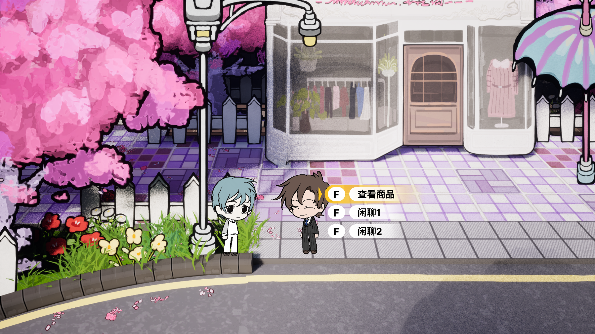
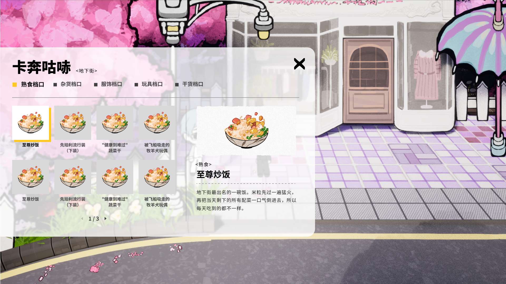

项目概述
项目概述定位：本作品是一款以叙事为核心的角色扮演游戏。玩家将扮演主角“吴向寓”，在“宙际”这个充满幻想科技的地方，跟随剧情的推进与探索区域的拓展， 而成长、发现、感悟。
背景设定：游戏采用原创架空世界观，由人与神在内的多种族共同构成。世界体系复杂，多价值观并存。希望给玩家们呈现一个带有成人童话质感般的沉重却温柔的世界。
游戏基调：黑色童话风格，温馨与沉重并存的游戏氛围，呈现人们对于幸福、归属与个人信念的不同理解。
项目成员
断断（主创）：文案、原画
小贝（me）：程序、策划、交互
碳酸：地编、UI
酸酸：原画

此标志为当前版本已完成
剧情解锁
当前共有7章主线剧情
已完成第零章（16节）AVG
解锁条件
完成前置章节
解锁条件
完成关联章节
随主线不定期解锁支线
奖励
新剧情解锁
剧情出现重要概念进入<图鉴>
装扮
收集度
up①
联系簿
②
万象站
③
作品百科
角色信息
换装系统
共88个有骨骼重要角色，已置入角色信息和换装功能。
四个类目下共128个条目
八个类目下共347个条目
新地图解锁
共有16条街道
①
地图交互点位调查
②
随机出现重要NPC可进行对话
可获得物品/商品信息
固定NPC可进行互动
特殊点位可进行特殊互动
重要NPC按照设定权重，随机出现在地图上，可进行交互。
四条街道交互点 已整理
信息调查&商品调查 已跑通
固定NPC互动/对话已跑通
地图探索获得重要概念进入<图鉴>
< 主要界面交互原型 >
仅为原型设计效果展示，与实机页面有出入。
游戏中重要内容的入口都集成在同一个“菜单”页面中，方便统一进入。

原笔头人
是游戏世界观相关的内容，类似于管家机器人的角色。在游戏系统中被塑造为“吉祥物”，贯穿游戏始终。
系统框架-设计思考
背景
原主创团队吸取了前两次尝试的经验，当前版本希望尽快做出一版完整、可体验的游戏，让内容真正落地。早期方案包含较多内容，包括基地基建、经营等，但同时推进会拉长制作周期。因此，当前版本以剧情阅读和画面演出为核心，先完成一版以剧情体验为核心内容的游戏，再根据后续精力补充内容。
明确系统边界
团队首先明确了系统边界，不制作经济、背包和时间系统。现阶段的框架围绕剧情、地图探索、图鉴与换装展开：探索带来新的故事、角色和世界信息；剧情推进则解锁新的地点与内容，各系统都服务于阅读和发现。
建立核心循环
玩家阅读剧情，随主线推进解锁地图；在地图中调查交互点、与角色对话，触发新的剧情，并将发现的人物和世界信息收录进图鉴。
当前整体循环为：阅读剧情 → 解锁地点 → 探索与对话 → 获得新剧情和图鉴内容。
从菜单页面进入，点击任务，即可进入剧情选择页面。
页面分为左侧章节列表；中部可视化章节列表； 右侧章节内容介绍及剧情进入按钮。
文本
画面预设
类型
显示文本
显示人名
立绘特殊处理
对话框更换
情绪特效
整体画面效果
台词
震动
内心独白
黑屏（淡入/淡出/黑屏）
旁白
立绘
角色选择
动作选择
情绪选择
AVG背景来源于游戏真实地图画面。
通过剧情编辑器可以配置显示镜头、地图上骨骼小人的显示以及其它背景参数。
除立绘之外，剧情角色的骨骼小人也会出现在场景中。
显示/隐藏
播放设置
剧情回溯
倍速
自动


 1剧情系统
1剧情系统剧情编辑器是为方便对AVG内容进行组织和配置而制作的工具。
工具以飞书表格为内容源。可将剧情、地图、UI、图鉴等模块的原始表格进入工具中进行剧情效果预览并编辑修改。
修改后的内容可在工具中一键覆盖回在线表格，也可以通过自动化流程一键导出到UE 数据表。
剧情编辑器由六个区域构成
- 1.章节选择
- 2.block选择
- 3.dialogue选择
- 4.配置编辑区
- 5.画面预览
- 6.保存&导出

剧情编辑器
剧情编辑器配置拆解
流程 / Block
每一节stage的大段文字会被拆分成多个block层级，每个 Block 负责一段相对完整的情境或节奏，通常地点切换、任务穿插等可作为拆分block的依据。
可修改内容
地点起始台词 IDblock排序背景音乐 BGM文本 / Dialogue
台词／旁白／内心独白都算作dialogue层级，dialogue需要区分以上几种文本形式，以匹配不同的画面显示方式。dialogue承载内容较多，主要有以下内容：
可修改内容
文本文本类型（台词／旁白／内心独白）旁白形式（黑屏旁白／普通旁白）修改文本（显示文本／显示人名）场景在 Block 地点下选择具体场景镜头选择出镜骨骼角色选择镜头id立绘角色选择角色id→选择可选立绘动作→选择可选立绘表情立绘位置居左／居右画面内容储存多类画面效果预设以预设id的形式统一配置
（可多选）对话框情绪气泡震动立绘特殊处理出现时机效果参数
特殊行 / Cue
Cue是夹在台词文本中的特殊行，不作为普通对白播放，非台词、旁白之类的非正式文本被归类为Cue。Cue主要作为提示文字或用于配置正文中穿插的特殊内容。
Cue的具体用途用三种：
- 提示文字：记录策划提醒或段落说明，帮助配置和检查剧情，不显示给玩家。
- 任务：当剧情需要暂时交还玩家操作，例如前往另一处场景或与角色互动，就在对应 Cue 行关联任务。任务可配置类型、触发对象或区域、目标 Block，以及画面中的任务提示；完成后再接续剧情。
- 转场：当两句文本之间需要特殊过渡，可以在 Cue 行选择转场预设，让转场发生在指定位置。
可修改内容
选择Cue 类型任务提示文字转场通过task_id配置，由task模块承接转场（选择转场预设）剧情系统-设计思考
剧情层级与推进
剧情按章（Chapter） → 节（Stage）→ 段落（Block）→ 台词（Dialogue）四层组织。章节确定整体顺序与解锁关系；一个小节由多个 Block 串成流程，每个 Block 负责一段相对完整的情境或节奏，也可以配置等待点击、自动推进和转场；每条台词配置说什么、由谁说、画面怎样变化。
配置与 UE 落地
我将文本内容按照设计的层级梳理成飞书表格，作为剧情数据源。同时在自制编辑器中修改 Block 流程图、调整台词与演出，并直接预览 AVG 画面。确认后导入 UE DataTable，由游戏按同一结构播放。
逐句配置文本与演出
画面的细节配置关联在每句台词文本上。文本类型包括台词、旁白、内心独白和提示；角色 ID、动作、表情与站位构成立绘；背景、对话框样式、情绪气泡、震动等通过预设调用，并指定在开头、持续期间或结尾出现。通过此方法可以按句控制画面的信息量和情绪节奏。


图鉴-设计思考
内容定位与分工
图鉴承接剧情与地图探索中出现的人物、场景和重要概念，为分散的信息提供统一的回看入口。内容分为“万象站”“作品百科”“联系簿”三部分，分别整理世界场景、作品与物件、角色资料。
按层级查阅世界设定
万象站和作品百科采用“入口 → 分类 → 条目 → 正文”的层级。先按地点或主题选择内容，再查看图像与文字说明；有分支的条目继续展开。
文本的整理与归类
主创为图鉴创作了大量文本，并且涉及到的内容较为零散和多样。整理时，按内容用途分为两条线：地点、阵营、生物等世界设定归入“万象站”；世界观内创作的作品及相关条目归入“作品百科”。大量文本因此有了清晰的阅读入口。
联系簿作为单独的入口
联系簿虽然是图鉴的一部分（角色图鉴），整体功能也更偏向于角色信息的展示，但实际上被摘出来作为一个单独的入口，是希望为后续内容做考虑。地图地点和店铺还积累了大量物品描述、商品插图与文字。而项目不做经济和背包系统，常规的购买与持有玩法不适用。为串联这些内容，并且实现主创对于角色互动的要求，曾构思“角色邀约”。此系统将收集实体物品变成收集“信息”，玩家通过调查物品发现角色线索，触发事件，经过多轮文字推理与调查，获得 CG 或角色专属剧情。
由于种种原因，角色邀约目前搁置，但“联系簿”还承担换装的作用，且可能会在后期承担更多角色互动的功能，所以仍然单独作为一个入口，而不合并进入图鉴。
3
地图探索系统
地图是AVG剧情的背景板，同时也是游戏循环中的重要环节。玩家可以在地图中自由探索，偶遇喜爱的NPC角色并与之互动；在地图上搜集信息，丰富图鉴；随机解锁安排的彩蛋。
①
交互点位
物品调查
地图上设置了一些可以调查的特殊物品，玩家可以从这些信息中获取关于世界观的更多线索，也可能随机解锁图鉴内容。
地图上有多种多样的商铺，玩家可以在这里查看商品信息。
地图上出现用来丰富场景内容的不可交互角色。
重要NPC的特殊互动方式。
地图上有固定NPC可进行对话或进入购买窗口。
查看商品
固定NPC
②
无交互NPC
③
重要NPC随机出现





地图交互-设计思考
将街道素材转化为可阅读的内容
主创为每条街道准备了大量物品调查文本、商品插图与说明。由于项目不做经济和背包系统，这些素材不适合依赖购买、拾取来呈现。地图探索因此围绕观察、调查和对话展开，让街道从剧情背景变成可阅读的空间。
将交互整理为三类
策划将交互内容分为物品调查、商品查看和 NPC 互动。调查呈现场景线索；商品查看整理店铺物品与描述；NPC 互动承接人物对话和事件。三类内容使用同一入口。
用点位连接场景与内容
每个交互对象先在点位表登记 PointID、所属地点、显示名称与交互类型，再由 PointID 索引相应内容：调查点读取物品文本，店铺点关联档口及其商品，NPC 点关联交互选项与对话。场景负责放置点位，表格负责管理内容，后续修改也能沿 PointID 找到对应配置。
效果演示< 交互原型 >
< 实机演示 >